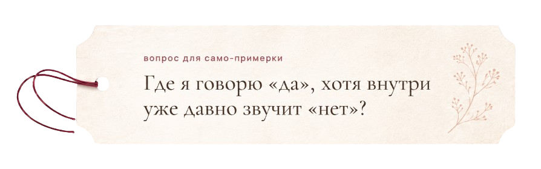

письмо из примерочной
Личные границы
Как научиться говорить «нет» без чувства вины
Есть женщины, которые всегда на связи.
Им пишут — они отвечают. Их просят — они помогают. Им говорят: «Ты не занята?» — и они почти автоматически отвечают: «Нет, говори».
Даже если заняты. Даже если устали. Даже если внутри уже есть маленькое, почти неслышное: «Я не хочу».
Телефон снова загорается. Просьба. Сообщение. Чужое ожидание.
И рука всё равно тянется ответить.
Потому что неудобно отказать. Потому что вдруг обидятся. Потому что «я же хорошая». Потому что «ну мне не сложно».
А потом в какой-то момент становится сложно.
Очень.
Граница — это не стена
Многие боятся темы личных границ, потому что слышат в ней холодность.
Как будто поставить границу — значит оттолкнуть, закрыться, перестать любить, стать жёсткой.
Но личные границы в отношениях — это не стена.
Граница — это кожа.
То место, где ты заканчиваешься и начинается другой человек.
Без кожи больно. Любое прикосновение становится слишком сильным. Любая просьба — давлением. Любое ожидание — вторжением. Любой чужой дискомфорт — твоей ответственностью.
И тогда внутри появляется сквозняк.
Ты вроде бы рядом со всеми, но всё меньше рядом с собой.
